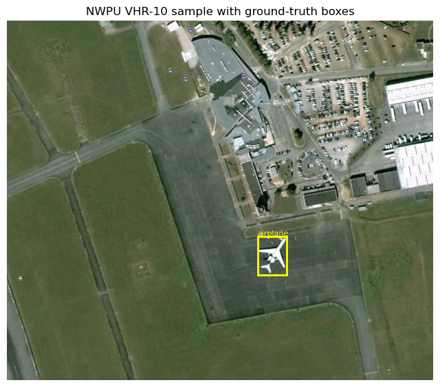
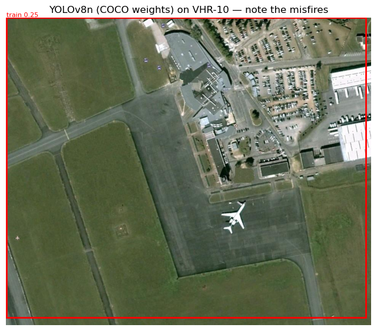
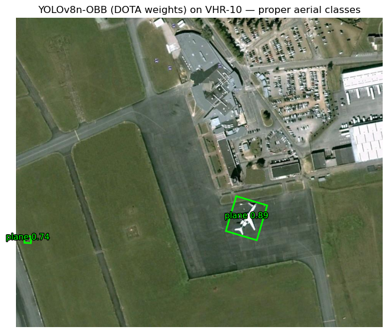
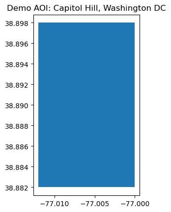
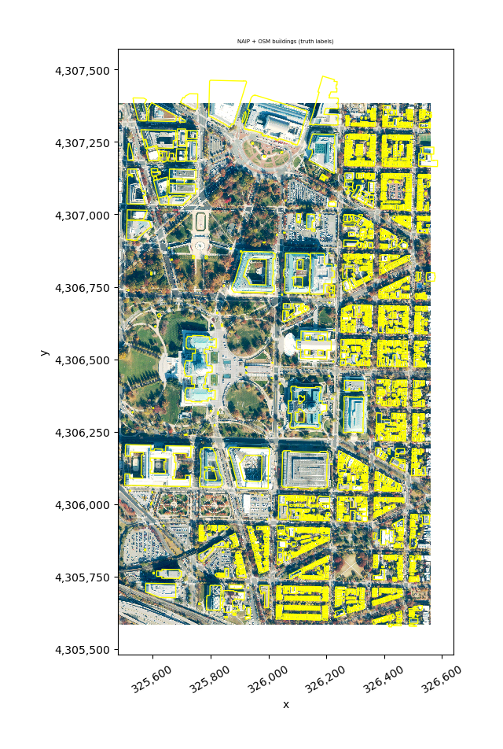
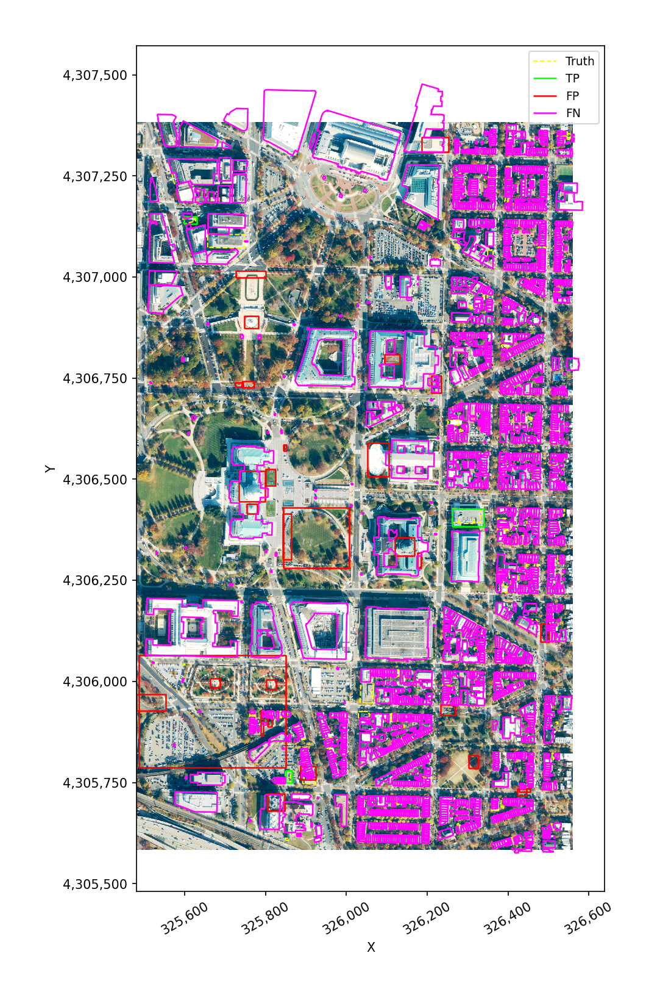
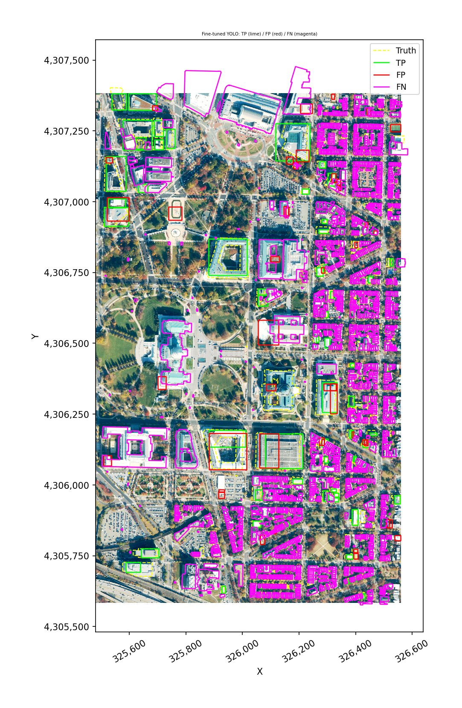
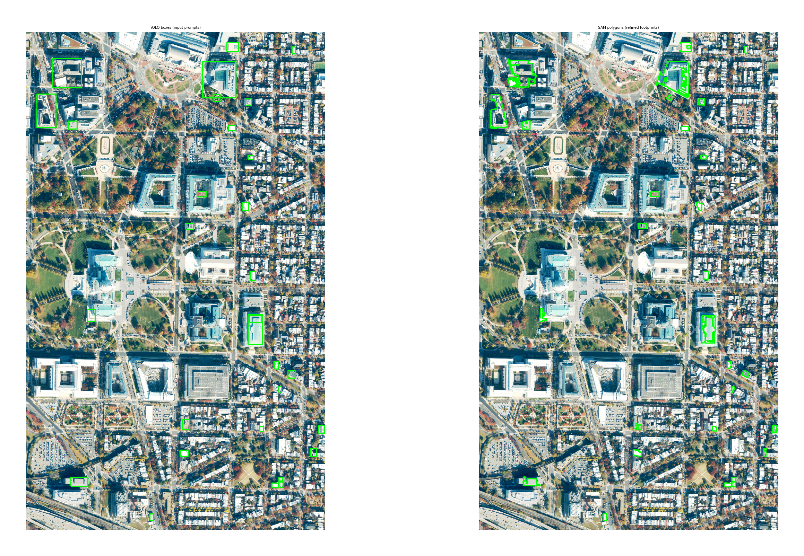

Object Detection with geowombat#
This notebook walks through the geowombat object-detection module:
Quickstart — run a pretrained YOLO model on a public satellite detection benchmark (NWPU VHR-10 via TorchGeo) and score its accuracy.
Geowombat-native workflow — fetch a NAIP aerial image from Microsoft Planetary Computer plus OpenStreetMap building footprints, build a YOLO training dataset, run inference, score it, and export a GeoPackage you can review feature-by-feature in QGIS (e.g. with the GoToNextFeature3+ plugin).
Optional fine-tuning — fine-tune YOLO on the dataset built in step 2 so detections are actually useful for buildings.
Refine boxes to polygons with SAM — turn the fine-tuned bounding-box detections into precise vector footprints using Meta’s Segment Anything Model.
Required installs:
pip install geowombat[dl,detect,sam,stac]
pip install osmnx torchgeo
Setup#
[1]:
import warnings
from pathlib import Path
import geopandas as gpd
import matplotlib.pyplot as plt
import numpy as np
import geowombat as gw
from geowombat.detect import (
YOLODetector,
boxes_from_polygons,
build_dataset,
detection_accuracy,
export_for_review,
plot_detections,
predict,
)
warnings.filterwarnings('ignore')
WORK_DIR = Path('object_detection_demo')
WORK_DIR.mkdir(exist_ok=True)
/home/mmann1123/miniconda3/envs/geowombat_dev/lib/python3.11/site-packages/tqdm/auto.py:21: TqdmWarning: IProgress not found. Please update jupyter and ipywidgets. See https://ipywidgets.readthedocs.io/en/stable/user_install.html
from .autonotebook import tqdm as notebook_tqdm
1. Quickstart: pretrained YOLO on NWPU VHR-10#
NWPU VHR-10 is a small (~715 images, 10 classes) public satellite-imagery detection benchmark. TorchGeo auto-downloads it. We’ll run a pretrained Ultralytics YOLO model on a few images and score the result.
Caveat: YOLO’s default weights are trained on COCO, which only overlaps with VHR-10 on a couple of classes (e.g. airplane, ship, vehicle). Expect low mAP — this section is about exercising the API, not about state-of-the-art accuracy. The geowombat-native section below shows the full train-and-score loop.
[2]:
from torchgeo.datasets import VHR10
vhr_dir = WORK_DIR / 'vhr10'
ds = VHR10(root=str(vhr_dir), split='positive', download=True)
print(f'Dataset size: {len(ds)} positive images')
print('Classes:', ds.categories[:5], '...')
Files already downloaded and verified
loading annotations into memory...
Done (t=0.02s)
creating index...
index created!
Dataset size: 650 positive images
Classes: ('background', 'airplane', 'ships', 'storage tank', 'baseball diamond') ...
[3]:
# Inspect a single sample. TorchGeo 0.9 keys: image, label, bbox_xyxy, mask
sample = ds[0]
img = sample['image'].permute(1, 2, 0).numpy().astype(np.uint8)
boxes = sample['bbox_xyxy'].numpy()
labels = sample['label'].numpy()
fig, ax = plt.subplots(figsize=(8, 8))
ax.imshow(img)
for (x1, y1, x2, y2), lbl in zip(boxes, labels):
ax.add_patch(plt.Rectangle((x1, y1), x2-x1, y2-y1,
fill=False, edgecolor='yellow', lw=2))
ax.text(x1, y1-3, ds.categories[lbl], color='yellow', fontsize=8)
ax.set_title('NWPU VHR-10 sample with ground-truth boxes')
ax.axis('off')
plt.show()

Picking a YOLO variant#
Ultralytics ships several pretrained YOLO weight families. The right choice depends on what you’re detecting, not just how fast you need it to run.
Weight family |
Trained on |
Classes |
When to use |
|---|---|---|---|
|
COCO |
80 everyday classes (person, car, dog, …) |
Ground-level photos. Wrong tool for overhead imagery — most COCO classes never appear from above. |
|
COCO |
Same 80 classes |
Newer architecture, same training set as YOLOv8 COCO. Same caveat for aerial data. |
|
DOTA-v1 (aerial) |
15 aerial classes: plane, ship, storage tank, baseball diamond, tennis court, basketball court, ground track field, harbor, bridge, large vehicle, small vehicle, helicopter, roundabout, soccer ball field, swimming pool |
Best out-of-the-box choice for satellite/aerial imagery. Predicts rotated boxes (OBB). |
|
LVIS + grounding |
Open-vocabulary — you pass text prompts at inference time |
When DOTA classes don’t cover what you need. Use |
Custom-trained checkpoint |
Your dataset |
Whatever you trained on |
After fine-tuning — see Section 3 below. |
Size suffix (n < s < m < l < x) trades inference speed for accuracy. Default to n or s for prototyping, m+ for production.
Non-YOLO option: geowombat.detect.TorchGeoDetector wraps torchvision Faster R-CNN / RetinaNet and can load TorchGeo’s xView pretrained weights — a richer 60-class aerial label set. Use it when the AGPL license on Ultralytics is a problem or when xView’s class set is a better fit than DOTA’s.
[4]:
# 1. Default `yolov8n.pt` — trained on COCO, the wrong tool for overhead
# imagery. We expect garbage detections (a 'train' box covering the
# entire chip, etc.) because COCO classes don't generalize.
from ultralytics import YOLO
# Load the smallest YOLOv8 weights (auto-downloaded on first run).
yolo_coco = YOLO('yolov8n.pt')
result = yolo_coco.predict(
source=img, # the image to run on
conf=0.1, # keep detections above this confidence
verbose=False,
)[0] # one image in, one result out
fig, ax = plt.subplots(figsize=(8, 8))
ax.imshow(img)
if result.boxes is not None and len(result.boxes) > 0:
for b, c, s in zip(result.boxes.xyxy.cpu().numpy(),
result.boxes.cls.cpu().numpy().astype(int),
result.boxes.conf.cpu().numpy()):
x1, y1, x2, y2 = b
ax.add_patch(plt.Rectangle((x1, y1), x2-x1, y2-y1,
fill=False, edgecolor='red', lw=2))
ax.text(x1, y1-3, f'{yolo_coco.names[c]} {s:.2f}',
color='red', fontsize=8)
ax.set_title('YOLOv8n (COCO weights) on VHR-10 — note the misfires')
ax.axis('off')
plt.show()

Improved: DOTA-pretrained YOLO-OBB#
Same model architecture, different training data. yolov8n-obb.pt was trained on DOTA-v1, a satellite/aerial benchmark with the 15 classes listed above. It produces oriented bounding boxes (four corner points each) instead of axis-aligned rectangles, which is what you want for objects on a runway, ship in a harbor, etc.
On the same VHR-10 chip you should now see clean plane detections with reasonable confidence — no fine-tuning required.
[5]:
# 2. yolov8n-obb.pt — DOTA-trained. Same call, different weights.
import matplotlib.patheffects as pe
# `-obb.pt` weights predict rotated boxes instead of axis-aligned ones.
yolo_obb = YOLO('yolov8n-obb.pt')
result_obb = yolo_obb.predict(
source=img,
conf=0.25, # this model is more confident, so we can raise the threshold
verbose=False,
)[0]
fig, ax = plt.subplots(figsize=(8, 8))
ax.imshow(img)
if result_obb.obb is not None and len(result_obb.obb) > 0:
quads = result_obb.obb.xyxyxyxy.cpu().numpy() # (N, 4, 2)
clses = result_obb.obb.cls.cpu().numpy().astype(int)
confs = result_obb.obb.conf.cpu().numpy()
for quad, cls, conf in zip(quads, clses, confs):
polygon = plt.Polygon(quad, fill=False, edgecolor='lime', lw=2)
ax.add_patch(polygon)
cx, cy = quad.mean(axis=0)
ax.text(cx, cy, f'{yolo_obb.names[cls]} {conf:.2f}',
color='lime', fontsize=10, ha='center',
path_effects=[pe.withStroke(linewidth=2,
foreground='black')])
ax.set_title('YOLOv8n-OBB (DOTA weights) on VHR-10 — proper aerial classes')
ax.axis('off')
plt.show()

Same YOLODetector interface, just point weights= at the OBB checkpoint and set oriented=True (auto-detected from the filename ending in -obb.pt). It then plugs into src.gw.detect exactly like the COCO variant — but the resulting GeoDataFrame carries rotated polygon geometries instead of axis-aligned boxes:
from geowombat.detect import YOLODetector
det = YOLODetector(weights='yolov8n-obb.pt') # oriented=True inferred
with gw.open('aerial.tif') as src:
preds = src.gw.detect(det, conf=0.25)
2. Geowombat-native workflow: NAIP + OpenStreetMap buildings#
Now the full pipeline using a georeferenced raster and georeferenced vector labels:
Pull a NAIP scene from Microsoft Planetary Computer for a small AOI.
Pull OSM building footprints for the same AOI with
osmnx.Build a YOLO-format training dataset with
build_yolo_dataset.Run inference; observe that COCO-pretrained YOLO won’t see buildings.
Score with
detection_accuracyand export a review GeoPackage.Optional: fine-tune YOLO on the dataset from step 3.
[6]:
# AOI: ~2 km square over Capitol Hill, Washington DC. Row-house
# residential gives the fine-tune cell good signal (dense, regular,
# visually distinctive buildings). Adjust the bounds for any other
# city — wider bounds give more training data but a slower download.
from shapely.geometry import box as shapely_box
AOI_BOUNDS = (-77.012, 38.882, -77.000, 38.898) # west, south, east, north (~1 km x 1.8 km, ~half the original AOI)
aoi = gpd.GeoDataFrame(
{'name': ['demo']},
geometry=[shapely_box(*AOI_BOUNDS)],
crs='EPSG:4326',
)
aoi.plot()
plt.title('Demo AOI: Capitol Hill, Washington DC')
plt.show()

[7]:
# Fetch a recent NAIP scene via geowombat's STAC interface. This
# searches Planetary Computer, signs the URL, clips to the AOI, and
# returns both the DataArray and a GeoDataFrame of the matching
# STAC items (with each item's true scene polygon as its geometry).
from geowombat.core.stac import open_stac
naip_local = WORK_DIR / 'naip_aoi.tif'
data, naip_items = open_stac(
stac_catalog='microsoft_v1',
collection='naip',
bounds=AOI_BOUNDS, # lat/lon (left, bottom, right, top)
start_date='2021-01-01',
end_date='2023-12-31',
max_items=1, # take the most recent scene
epsg=26918, # NAD83 / UTM 18N for the DC area
resolution=0.6, # NAIP native ground sample distance
compute=True, # eagerly download into memory
)
# Materialize to disk so later cells can re-open with chunked I/O.
data.gw.save(naip_local, num_workers=4, overwrite=True)
naip_crs = data.gw.crs_to_pyproj
print(f'NAIP scene: {naip_items["id"].iloc[0]}')
print(f'Wrote local AOI clip: {naip_local}')
# The STAC item carries the actual scene polygon (not just a bbox).
# Intersect with the AOI to get the *valid* coverage area — buildings
# outside this polygon would sit on no-data pixels.
from shapely.geometry import box as shapely_box
aoi_poly_4326 = shapely_box(*AOI_BOUNDS)
valid_polygon_4326 = naip_items.geometry.iloc[0].intersection(aoi_poly_4326)
Searching microsoft_v1 for naip...
Found 1 items.
NAIP scene: va_m_3807708_se_18_060_20231113_20240103
Wrote local AOI clip: object_detection_demo/naip_aoi.tif
[8]:
# Fetch OSM buildings within the NAIP coverage polygon (not the raw
# AOI bbox), so we don't ingest labels in areas with no imagery.
import osmnx as ox
tags = {'building': True}
buildings = ox.features_from_polygon(valid_polygon_4326, tags=tags)
buildings = buildings[buildings.geometry.type.isin(['Polygon', 'MultiPolygon'])].copy()
buildings['class_name'] = 'building'
print(f'Fetched {len(buildings)} building footprints inside NAIP coverage')
buildings.head(3)
Fetched 2061 building footprints inside NAIP coverage
[8]:
| geometry | addr:state | building | ele | gnis:feature_id | name | source | wikidata | wikipedia | fax | ... | dcgis:ssl | dcgis:update_date | name:br | year_of_construction | name:etymology | contact:flickr | contact:pinterest | contact:twitter | ref:isil | class_name | ||
|---|---|---|---|---|---|---|---|---|---|---|---|---|---|---|---|---|---|---|---|---|---|---|
| element | id | |||||||||||||||||||||
| relation | 286501 | POLYGON ((-77.00392 38.89077, -77.00375 38.890... | DC | office | NaN | NaN | Supreme Court of the United States | NaN | Q11201 | en:Supreme Court of the United States | NaN | ... | 0728 0843 | Mon Mar 21 00:00:00 UTC 2005 | Lez-veur ar Stadoù-Unanet | 1935 | NaN | NaN | NaN | NaN | NaN | building |
| 286503 | POLYGON ((-77.00614 38.88635, -77.00614 38.886... | DC | government | NaN | NaN | Cannon House Office Building | NaN | Q1033452 | en:Cannon House Office Building | NaN | ... | 0690 0800 | Mon Mar 21 00:00:00 UTC 2005 | NaN | NaN | NaN | NaN | NaN | NaN | NaN | building | |
| 554408 | POLYGON ((-77.00188 38.89778, -77.0019 38.8977... | NaN | apartments | NaN | NaN | NaN | dcgis | NaN | NaN | NaN | ... | NaN | NaN | NaN | NaN | NaN | NaN | NaN | NaN | NaN | building |
3 rows × 150 columns
[9]:
# Reproject buildings into the raster CRS and double-check they fall
# inside the NAIP scene polygon.
buildings_proj = buildings.to_crs(naip_crs)
valid_polygon_naip_crs = (
gpd.GeoSeries([valid_polygon_4326], crs='EPSG:4326')
.to_crs(naip_crs).iloc[0]
)
buildings_proj = buildings_proj[
buildings_proj.intersects(valid_polygon_naip_crs)
].copy()
# sensor='naip' tells geowombat NAIP's bands are red/green/blue/nir
# (4-band RGBN). Inside this context we can select bands by name,
# and detection helpers also resolve `band_indices` themselves — no
# need to pass `band_indices=[0, 1, 2]` per call.
with gw.config.update(sensor='naip'):
with gw.open(naip_local, chunks=512) as src:
print(f'NAIP scene: {src.gw.nrows} x {src.gw.ncols}, '
f'{src.gw.nbands} bands, {src.gw.cellx:.2f} m')
fig, ax = plt.subplots(figsize=(10, 10))
# `.gw.imshow` handles the (band, y, x) -> (y, x, band) reorder
# and uses the raster's geographic extent automatically.
(src.sel(band=['red', 'green', 'blue'])
.gw.imshow(ax=ax, robust=True))
buildings_proj.boundary.plot(ax=ax, color='yellow', lw=1)
ax.set_title('NAIP + OSM buildings (truth labels)')
plt.show()
NAIP scene: 2997 x 1799, 4 bands, 0.60 m

[10]:
# Build a YOLO-format training dataset from the NAIP raster + buildings.
# NAIP bands 0,1,2 are R,G,B already 8-bit — no scaling needed. We use
# the `.gw.to_yolo_dataset(...)` accessor so the call stays inside the
# `with gw.open(...) as src:` block, like every other geowombat workflow.
yolo_dir = WORK_DIR / 'naip_buildings_yolo'
with gw.config.update(sensor='naip'):
with gw.open(naip_local, chunks=512) as src:
info = src.gw.to_yolo_dataset(
labels=buildings_proj, # vector labels to use
class_col='class_name', # column with the class name
out_dir=yolo_dir, # where to write the dataset
tile_size=640, # tile size in pixels
overlap=0.1, # how much tiles overlap (0–0.9)
val_split=0.2, # fraction of tiles used for validation
min_box_pixels=10, # drop boxes smaller than this
background_ratio=0.1, # keep some empty tiles as negatives
scale=None, # NAIP is already 8-bit, no rescaling
)
print(info)
{'out_dir': 'object_detection_demo/naip_buildings_yolo', 'classes': ['building'], 'n_train': 17, 'n_val': 7, 'n_boxes': 2296, 'empty_kept': 0, 'empty_skipped': 0}
Inference with pretrained YOLO#
We run YOLODetector directly on the NAIP scene. Pretrained COCO weights have no ‘building’ class, so we expect very few or no useful detections — but this verifies the inference pipeline (tile windowing, cross-tile NMS, pixel→CRS box conversion) end-to-end.
[11]:
# `YOLODetector` holds the loaded model. `src.gw.detect(detector, ...)`
# is the geowombat-native call site — same shape as `src.gw.predict()`
# for classification.
# Load the model once and reuse it.
det = YOLODetector(weights='yolov8n.pt')
with gw.config.update(sensor='naip'):
with gw.open(naip_local, chunks=512) as src:
preds = src.gw.detect(
det,
tile_size=640, # tile size for inference
overlap=0.2, # overlap so objects on tile edges aren't missed
conf=0.10, # low threshold: COCO weights don't know buildings
scale=None,
nms_iou=0.5, # how much overlap before duplicates are merged
progress=True,
)
print(f'{len(preds)} detections from pretrained YOLO')
preds.head()
YOLODetector: 100%|██████████| 24/24 [00:01<00:00, 21.15it/s]
32 detections from pretrained YOLO
[11]:
| geometry | class_id | class_name | score | tile_id | |
|---|---|---|---|---|---|
| 0 | POLYGON ((326168.456 4306310.848, 326168.456 4... | 74 | clock | 0.621648 | 13 |
| 1 | POLYGON ((325846.515 4305680.666, 325846.515 4... | 74 | clock | 0.437652 | 20 |
| 2 | POLYGON ((326326.227 4305785.563, 326326.227 4... | 9 | traffic light | 0.375044 | 22 |
| 3 | POLYGON ((326341.092 4306383.421, 326341.092 4... | 7 | truck | 0.351716 | 10 |
| 4 | POLYGON ((325744.14 4306727.808, 325744.14 430... | 2 | car | 0.338790 | 4 |
Reading the accuracy output#
Before we compute metrics, a quick glossary — these terms appear in the tables below and in the per-feature status column of the review GeoPackage.
Per-detection / per-truth labels
TP — True Positive. A predicted box that overlaps a ground-truth box with IoU ≥ the threshold and has the correct class. A hit.
FP — False Positive. A predicted box with no matching truth at the chosen IoU. A hallucination.
FP_class — Wrong-class False Positive. Predicted box landed in about the right place (IoU ≥ threshold against some truth) but the class label was wrong. Useful to separate ‘model can’t see it’ from ‘model sees it but mislabels it’.
FN — False Negative. A ground-truth box no detection matched. A miss.
IoU — Intersection over Union. The area of overlap divided by the area of union between two boxes. 1.0 = perfect overlap, 0.0 = no overlap. The IoU threshold (0.3, 0.5, …) controls how strict the spatial agreement needs to be to count as a match. 0.5 is the standard PASCAL VOC threshold; 0.3 is more lenient and useful for noisy or very small targets.
Aggregate metrics
precision = TP / (TP + FP) — of what the model predicted, what fraction was right? Penalizes false alarms.
recall = TP / (TP + FN) — of all the real objects, what fraction did the model find? Penalizes misses.
F1 = 2 · (precision · recall) / (precision + recall) — harmonic mean of the two; one number that drops if either side is poor.
AP — Average Precision. Sweeps the confidence threshold from high to low and integrates the precision-recall curve. A single per-class number that captures the precision/recall tradeoff over all confidence levels.
mAP@0.5 — the mean of per-class AP at IoU ≥ 0.5. The standard single-number summary for a detector.
mAP@[.5:.95] — average of mAP at IoU thresholds 0.5, 0.55, …, 0.95. COCO’s stricter measure; rewards tightly localized boxes.
support — number of ground-truth boxes for that class (the denominator for recall). Small support = noisy estimate.
Higher is better for everything except the bucket counts (where higher is better only for TP).
[12]:
# Accuracy assessment vs. OSM truth. We re-tag predictions as 'building'
# so the comparison is meaningful — pretrained YOLO labels things
# 'car', 'truck', etc., but we just want to see what it *boxed*.
preds_as_building = preds.copy()
preds_as_building['class_name'] = 'building'
results_pretrained = detection_accuracy(
predictions=preds_as_building,
truth=buildings_proj[['class_name', 'geometry']],
class_col='class_name',
iou_thresholds=(0.3, 0.5),
)
print('Per-class metrics (pretrained YOLO, no fine-tuning):')
print(results_pretrained['metrics'])
print()
print('Summary:', results_pretrained['summary'])
results = results_pretrained # alias kept for the cells below
Per-class metrics (pretrained YOLO, no fine-tuning):
ap precision recall f1 tp fp fn \
iou_threshold class
0.3 building 0.022727 0.09375 0.001456 0.002867 3 29 2058
0.5 building 0.022727 0.09375 0.001456 0.002867 3 29 2058
support
iou_threshold class
0.3 building 2061
0.5 building 2061
Summary: {'mAP@0.3': 0.022727272727272728, 'mAP@0.5': 0.022727272727272728}
[13]:
# Visualize TP / FP / FN
with gw.config.update(sensor='naip'):
with gw.open(naip_local, chunks=512) as src:
fig, ax = plt.subplots(figsize=(12, 12))
plot_detections(
src,
predictions=results['matched'],
truth=buildings_proj,
ax=ax,
scale=None,
)
plt.show()

[14]:
# Export the review GeoPackage. Open this in QGIS, use the attribute
# form or GoToNextFeature3+ to step through each detection, and fill in
# `reviewer_label` (TP/FP/FN/unclear). Then call recompute_from_review.
review_path = WORK_DIR / 'review.gpkg'
export_for_review(results['matched'], review_path)
print(f'Review file: {review_path.resolve()}')
print(' In QGIS: Open layer → switch to Form view → use',
'"GoToNextFeature3+" or built-in next-feature shortcut.')
Review file: /home/mmann1123/Documents/github/geowombat/notebooks/object_detection_demo/review.gpkg
In QGIS: Open layer → switch to Form view → use "GoToNextFeature3+" or built-in next-feature shortcut.
3. Fine-tune YOLO on the building dataset#
Pretrained COCO YOLO can’t recognize buildings. Fine-tuning teaches it to. We train yolov8n (the smallest variant, ~3M parameters) on the dataset we just built. Settings chosen for CPU-friendliness: small imgsz, small batch, modest epochs. On a typical laptop CPU expect a few minutes total; on GPU, well under one minute.
We send Ultralytics’ runs/ output into WORK_DIR so the demo leaves no clutter at the repo root.
[15]:
from ultralytics import YOLO
# Start from COCO weights and fine-tune on our buildings dataset.
yolo_train = YOLO('yolov8n.pt')
_ = yolo_train.train(
data=str(yolo_dir.resolve() / 'data.yaml'), # the dataset we just built
epochs=15, # how many passes over the data
imgsz=416, # training image size
batch=4, # batch size (small for CPU)
name='gw_buildings', # folder name for this run
exist_ok=True, # overwrite previous run if present
verbose=False,
plots=False,
)
# Ultralytics writes runs/ relative to its own cwd regardless of the
# project= kwarg, so we read the actual save_dir from the trainer.
best_weights = Path(yolo_train.trainer.save_dir) / 'weights' / 'best.pt'
print(f'Best weights: {best_weights}')
print(f'Exists: {best_weights.exists()}')
New https://pypi.org/project/ultralytics/8.4.52 available 😃 Update with 'pip install -U ultralytics'
Ultralytics 8.4.51 🚀 Python-3.11.14 torch-2.10.0+cu128 CUDA:0 (NVIDIA GeForce RTX 3080 Ti, 11911MiB)
engine/trainer: agnostic_nms=False, amp=True, angle=1.0, augment=False, auto_augment=randaugment, batch=4, bgr=0.0, box=7.5, cache=False, cfg=None, classes=None, close_mosaic=10, cls=0.5, cls_pw=0.0, compile=False, conf=None, copy_paste=0.0, copy_paste_mode=flip, cos_lr=False, cutmix=0.0, data=/home/mmann1123/Documents/github/geowombat/notebooks/object_detection_demo/naip_buildings_yolo/data.yaml, degrees=0.0, deterministic=True, device=0, dfl=1.5, dnn=False, dropout=0.0, dynamic=False, embed=None, end2end=None, epochs=15, erasing=0.4, exist_ok=True, fliplr=0.5, flipud=0.0, format=torchscript, fraction=1.0, freeze=None, half=False, hsv_h=0.015, hsv_s=0.7, hsv_v=0.4, imgsz=416, int8=False, iou=0.7, keras=False, kobj=1.0, line_width=None, lr0=0.01, lrf=0.01, mask_ratio=4, max_det=300, mixup=0.0, mode=train, model=yolov8n.pt, momentum=0.937, mosaic=1.0, multi_scale=0.0, name=gw_buildings, nbs=64, nms=False, opset=None, optimize=False, optimizer=auto, overlap_mask=True, patience=100, perspective=0.0, plots=False, pose=12.0, pretrained=True, profile=False, project=None, rect=False, resume=False, retina_masks=False, rle=1.0, save=True, save_conf=False, save_crop=False, save_dir=/home/mmann1123/Documents/github/geowombat/notebooks/runs/detect/gw_buildings, save_frames=False, save_json=False, save_period=-1, save_txt=False, scale=0.5, seed=0, shear=0.0, show=False, show_boxes=True, show_conf=True, show_labels=True, simplify=True, single_cls=False, source=None, split=val, stream_buffer=False, task=detect, time=None, tracker=botsort.yaml, translate=0.1, val=True, verbose=False, vid_stride=1, visualize=False, warmup_bias_lr=0.1, warmup_epochs=3.0, warmup_momentum=0.8, weight_decay=0.0005, workers=8, workspace=None
Overriding model.yaml nc=80 with nc=1
from n params module arguments
0 -1 1 464 ultralytics.nn.modules.conv.Conv [3, 16, 3, 2]
1 -1 1 4672 ultralytics.nn.modules.conv.Conv [16, 32, 3, 2]
2 -1 1 7360 ultralytics.nn.modules.block.C2f [32, 32, 1, True]
3 -1 1 18560 ultralytics.nn.modules.conv.Conv [32, 64, 3, 2]
4 -1 2 49664 ultralytics.nn.modules.block.C2f [64, 64, 2, True]
5 -1 1 73984 ultralytics.nn.modules.conv.Conv [64, 128, 3, 2]
6 -1 2 197632 ultralytics.nn.modules.block.C2f [128, 128, 2, True]
7 -1 1 295424 ultralytics.nn.modules.conv.Conv [128, 256, 3, 2]
8 -1 1 460288 ultralytics.nn.modules.block.C2f [256, 256, 1, True]
9 -1 1 164608 ultralytics.nn.modules.block.SPPF [256, 256, 5]
10 -1 1 0 torch.nn.modules.upsampling.Upsample [None, 2, 'nearest']
11 [-1, 6] 1 0 ultralytics.nn.modules.conv.Concat [1]
12 -1 1 148224 ultralytics.nn.modules.block.C2f [384, 128, 1]
13 -1 1 0 torch.nn.modules.upsampling.Upsample [None, 2, 'nearest']
14 [-1, 4] 1 0 ultralytics.nn.modules.conv.Concat [1]
15 -1 1 37248 ultralytics.nn.modules.block.C2f [192, 64, 1]
16 -1 1 36992 ultralytics.nn.modules.conv.Conv [64, 64, 3, 2]
17 [-1, 12] 1 0 ultralytics.nn.modules.conv.Concat [1]
18 -1 1 123648 ultralytics.nn.modules.block.C2f [192, 128, 1]
19 -1 1 147712 ultralytics.nn.modules.conv.Conv [128, 128, 3, 2]
20 [-1, 9] 1 0 ultralytics.nn.modules.conv.Concat [1]
21 -1 1 493056 ultralytics.nn.modules.block.C2f [384, 256, 1]
22 [15, 18, 21] 1 751507 ultralytics.nn.modules.head.Detect [1, 16, None, [64, 128, 256]]
Model summary: 130 layers, 3,011,043 parameters, 3,011,027 gradients, 8.2 GFLOPs
Transferred 319/355 items from pretrained weights
Freezing layer 'model.22.dfl.conv.weight'
AMP: running Automatic Mixed Precision (AMP) checks...
AMP: checks passed ✅
train: Fast image access ✅ (ping: 0.0±0.0 ms, read: 4462.3±2704.2 MB/s, size: 107.7 KB)
train: Scanning /home/mmann1123/Documents/github/geowombat/notebooks/object_detection_demo/naip_buildings_yolo/labels/train.cache... 17 images, 0 backgrounds, 0 corrupt: 100% ━━━━━━━━━━━━ 17/17 6.5Mit/s 0.0s
val: Fast image access ✅ (ping: 0.0±0.0 ms, read: 4503.8±2277.7 MB/s, size: 104.8 KB)
val: Scanning /home/mmann1123/Documents/github/geowombat/notebooks/object_detection_demo/naip_buildings_yolo/labels/val.cache... 7 images, 0 backgrounds, 0 corrupt: 100% ━━━━━━━━━━━━ 7/7 699.1Kit/s 0.0s
optimizer: 'optimizer=auto' found, ignoring 'lr0=0.01' and 'momentum=0.937' and determining best 'optimizer', 'lr0' and 'momentum' automatically...
optimizer: AdamW(lr=0.002, momentum=0.9) with parameter groups 57 weight(decay=0.0), 64 weight(decay=0.0005), 63 bias(decay=0.0)
Image sizes 416 train, 416 val
Using 8 dataloader workers
Logging results to /home/mmann1123/Documents/github/geowombat/notebooks/runs/detect/gw_buildings
Starting training for 15 epochs...
Epoch GPU_mem box_loss cls_loss dfl_loss Instances Size
1/15 0.586G 3.617 3.546 2.075 122 416: 100% ━━━━━━━━━━━━ 5/5 5.2it/s 1.0s0.1s
Class Images Instances Box(P R mAP50 mAP50-95): 100% ━━━━━━━━━━━━ 1/1 13.7it/s 0.1s
all 7 513 0.01 0.0409 0.00541 0.00165
Epoch GPU_mem box_loss cls_loss dfl_loss Instances Size
2/15 0.789G 3.402 3.535 1.934 80 416: 100% ━━━━━━━━━━━━ 5/5 35.8it/s 0.1s.2s
Class Images Instances Box(P R mAP50 mAP50-95): 100% ━━━━━━━━━━━━ 1/1 47.8it/s 0.0s
all 7 513 0.0148 0.0604 0.00527 0.00191
Epoch GPU_mem box_loss cls_loss dfl_loss Instances Size
3/15 0.789G 3.555 3.409 1.876 184 416: 100% ━━━━━━━━━━━━ 5/5 41.5it/s 0.1s0.1s
Class Images Instances Box(P R mAP50 mAP50-95): 100% ━━━━━━━━━━━━ 1/1 46.4it/s 0.0s
all 7 513 0.0157 0.0643 0.007 0.00328
Epoch GPU_mem box_loss cls_loss dfl_loss Instances Size
4/15 0.789G 3.327 3.314 1.64 141 416: 100% ━━━━━━━━━━━━ 5/5 35.5it/s 0.1s.2s
Class Images Instances Box(P R mAP50 mAP50-95): 100% ━━━━━━━━━━━━ 1/1 48.6it/s 0.0s
all 7 513 0.0219 0.0897 0.0211 0.0108
Epoch GPU_mem box_loss cls_loss dfl_loss Instances Size
5/15 0.789G 3.456 3.183 1.571 239 416: 100% ━━━━━━━━━━━━ 5/5 40.8it/s 0.1s.2s
Class Images Instances Box(P R mAP50 mAP50-95): 100% ━━━━━━━━━━━━ 1/1 48.1it/s 0.0s
all 7 513 0.0214 0.0877 0.0237 0.0115
Closing dataloader mosaic
Epoch GPU_mem box_loss cls_loss dfl_loss Instances Size
6/15 0.789G 3.1 2.863 1.485 16 416: 100% ━━━━━━━━━━━━ 5/5 41.2it/s 0.1s.2s
Class Images Instances Box(P R mAP50 mAP50-95): 100% ━━━━━━━━━━━━ 1/1 41.7it/s 0.0s
all 7 513 0.021 0.0858 0.0286 0.0129
Epoch GPU_mem box_loss cls_loss dfl_loss Instances Size
7/15 0.789G 3.471 2.822 1.402 180 416: 100% ━━━━━━━━━━━━ 5/5 42.3it/s 0.1s0.1s
Class Images Instances Box(P R mAP50 mAP50-95): 100% ━━━━━━━━━━━━ 1/1 24.4it/s 0.0s
all 7 513 0.0238 0.0975 0.0245 0.012
Epoch GPU_mem box_loss cls_loss dfl_loss Instances Size
8/15 0.789G 3.232 2.558 1.404 16 416: 100% ━━━━━━━━━━━━ 5/5 30.0it/s 0.2s.6s
Class Images Instances Box(P R mAP50 mAP50-95): 100% ━━━━━━━━━━━━ 1/1 41.2it/s 0.0s
all 7 513 0.0238 0.0975 0.0245 0.012
Epoch GPU_mem box_loss cls_loss dfl_loss Instances Size
9/15 0.789G 3.38 2.591 1.383 172 416: 100% ━━━━━━━━━━━━ 5/5 38.4it/s 0.1s.2s
Class Images Instances Box(P R mAP50 mAP50-95): 100% ━━━━━━━━━━━━ 1/1 41.0it/s 0.0s
all 7 513 0.0271 0.111 0.0265 0.0113
Epoch GPU_mem box_loss cls_loss dfl_loss Instances Size
10/15 0.789G 3.297 2.386 1.309 96 416: 100% ━━━━━━━━━━━━ 5/5 43.3it/s 0.1s0.1s
Class Images Instances Box(P R mAP50 mAP50-95): 100% ━━━━━━━━━━━━ 1/1 42.9it/s 0.0s
all 7 513 0.0367 0.15 0.0326 0.00991
Epoch GPU_mem box_loss cls_loss dfl_loss Instances Size
11/15 0.789G 3.157 2.331 1.327 53 416: 100% ━━━━━━━━━━━━ 5/5 48.0it/s 0.1s0.1s
Class Images Instances Box(P R mAP50 mAP50-95): 100% ━━━━━━━━━━━━ 1/1 42.5it/s 0.0s
all 7 513 0.0367 0.15 0.0326 0.00991
Epoch GPU_mem box_loss cls_loss dfl_loss Instances Size
12/15 0.789G 3.354 2.286 1.309 172 416: 100% ━━━━━━━━━━━━ 5/5 42.8it/s 0.1s0.1s
Class Images Instances Box(P R mAP50 mAP50-95): 100% ━━━━━━━━━━━━ 1/1 42.3it/s 0.0s
all 7 513 0.0652 0.267 0.0723 0.0203
Epoch GPU_mem box_loss cls_loss dfl_loss Instances Size
13/15 0.789G 3.11 2.249 1.361 11 416: 100% ━━━━━━━━━━━━ 5/5 44.1it/s 0.1s0.1s
Class Images Instances Box(P R mAP50 mAP50-95): 100% ━━━━━━━━━━━━ 1/1 44.0it/s 0.0s
all 7 513 0.0652 0.267 0.0723 0.0203
Epoch GPU_mem box_loss cls_loss dfl_loss Instances Size
14/15 0.789G 3.139 2.37 1.408 96 416: 100% ━━━━━━━━━━━━ 5/5 45.9it/s 0.1s0.1s
Class Images Instances Box(P R mAP50 mAP50-95): 100% ━━━━━━━━━━━━ 1/1 44.2it/s 0.0s
all 7 513 0.0652 0.267 0.0723 0.0203
Epoch GPU_mem box_loss cls_loss dfl_loss Instances Size
15/15 0.789G 3.321 2.229 1.319 96 416: 100% ━━━━━━━━━━━━ 5/5 44.1it/s 0.1s0.1s
Class Images Instances Box(P R mAP50 mAP50-95): 100% ━━━━━━━━━━━━ 1/1 43.7it/s 0.0s
all 7 513 0.079 0.324 0.107 0.0297
15 epochs completed in 0.002 hours.
Optimizer stripped from /home/mmann1123/Documents/github/geowombat/notebooks/runs/detect/gw_buildings/weights/last.pt, 6.2MB
Optimizer stripped from /home/mmann1123/Documents/github/geowombat/notebooks/runs/detect/gw_buildings/weights/best.pt, 6.2MB
Validating /home/mmann1123/Documents/github/geowombat/notebooks/runs/detect/gw_buildings/weights/best.pt...
Ultralytics 8.4.51 🚀 Python-3.11.14 torch-2.10.0+cu128 CUDA:0 (NVIDIA GeForce RTX 3080 Ti, 11911MiB)
Model summary (fused): 73 layers, 3,005,843 parameters, 0 gradients, 8.1 GFLOPs
Class Images Instances Box(P R mAP50 mAP50-95): 100% ━━━━━━━━━━━━ 1/1 66.6it/s 0.0s
all 7 513 0.0786 0.322 0.106 0.0298
Speed: 0.1ms preprocess, 0.4ms inference, 0.0ms loss, 0.8ms postprocess per image
Best weights: /home/mmann1123/Documents/github/geowombat/notebooks/runs/detect/gw_buildings/weights/best.pt
Exists: True
Re-run inference with the fine-tuned model#
Same YOLODetector API, just point it at our new weights. We use a low confidence threshold (0.05) because with only ~17 training tiles and 15 epochs the model is heavily under-trained and hesitant — production weights would justify a much higher threshold like 0.25.
The point of this section is to show the fine-tuning pipeline works end-to-end. The numbers themselves will improve substantially with more data (a wider AOI), more epochs (50–100), and a larger backbone (yolov8s.pt or yolov8m.pt).
[16]:
det_ft = YOLODetector(
weights=str(best_weights), # our fine-tuned weights
classes=['building'], # class names for the output
)
with gw.config.update(sensor='naip'):
with gw.open(naip_local, chunks=512) as src:
preds_ft = src.gw.detect(
det_ft,
tile_size=416, # match the training image size
overlap=0.2,
conf=0.05, # short training run, so use a low threshold
scale=None,
nms_iou=0.5,
progress=True,
)
print(f'{len(preds_ft)} detections from fine-tuned YOLO',
f'(was {len(preds)} pretrained)')
YOLODetector: 100%|██████████| 54/54 [00:01<00:00, 31.32it/s]
119 detections from fine-tuned YOLO (was 32 pretrained)
[17]:
# Score the fine-tuned predictions
results_ft = detection_accuracy(
predictions=preds_ft,
truth=buildings_proj[['class_name', 'geometry']],
class_col='class_name',
iou_thresholds=(0.3, 0.5),
)
print('Per-class metrics (fine-tuned YOLO):')
print(results_ft['metrics'])
print()
print('Summary:', results_ft['summary'])
Per-class metrics (fine-tuned YOLO):
ap precision recall f1 tp fp fn \
iou_threshold class
0.3 building 0.090909 0.596639 0.034449 0.065138 71 48 1990
0.5 building 0.090909 0.252101 0.014556 0.027523 30 89 2031
support
iou_threshold class
0.3 building 2061
0.5 building 2061
Summary: {'mAP@0.3': 0.09090909090909091, 'mAP@0.5': 0.09090909090909091}
Before vs. after#
Side-by-side comparison of the pretrained and fine-tuned runs at IoU ≥ 0.3. Look at TP/FN going up/down for recall and FP for precision — the F1 column is the single-number summary.
[18]:
import pandas as pd
iou = 0.3 # use the more lenient threshold for the comparison
row_pre = results_pretrained['metrics'].loc[(iou, 'building')]
row_ft = results_ft['metrics'].loc[(iou, 'building')]
compare = pd.DataFrame(
{'pretrained': row_pre, 'fine-tuned': row_ft},
)
compare['delta'] = compare['fine-tuned'] - compare['pretrained']
print(f'Comparison at IoU >= {iou}:')
print(compare.round(3))
Comparison at IoU >= 0.3:
pretrained fine-tuned delta
ap 0.023 0.091 0.068
precision 0.094 0.597 0.503
recall 0.001 0.034 0.033
f1 0.003 0.065 0.062
tp 3.000 71.000 68.000
fp 29.000 48.000 19.000
fn 2058.000 1990.000 -68.000
support 2061.000 2061.000 0.000
[19]:
# Visualize TP / FP / FN from the fine-tuned run
with gw.config.update(sensor='naip'):
with gw.open(naip_local, chunks=512) as src:
fig, ax = plt.subplots(figsize=(12, 12))
plot_detections(
src,
predictions=results_ft['matched'],
truth=buildings_proj,
ax=ax,
scale=None,
)
ax.set_title('Fine-tuned YOLO: TP (lime) / FP (red) / FN (magenta)')
plt.show()

4. Refine boxes to polygons with SAM#
Detector output is bounding boxes — fine for counting and georeferencing, but downstream GIS work usually wants the actual footprint: a polygon that hugs the roof outline, the ship hull, the storage-tank circle. SAMRefiner takes each detected box as a prompt to Meta’s Segment Anything Model, returns a tight mask, and polygonizes it back into a vector geometry in the source CRS.
Requirements:
pip install geowombat[sam]
Plus a one-time checkpoint download. We use sam_vit_b (~375 MB) for speed in this notebook; sam_vit_l and sam_vit_h are slower but produce slightly cleaner masks on tricky targets.
[20]:
# One-time download of the SAM ViT-B checkpoint (~375 MB).
# Cached under WORK_DIR so subsequent runs skip the download.
import urllib.request
SAM_URL = ('https://dl.fbaipublicfiles.com/segment_anything/'
'sam_vit_b_01ec64.pth')
sam_ckpt = WORK_DIR / 'sam_vit_b.pth'
if not sam_ckpt.exists():
print(f'Downloading SAM checkpoint to {sam_ckpt} (~375 MB) ...')
urllib.request.urlretrieve(SAM_URL, sam_ckpt)
print('Done.')
else:
print(f'Using cached checkpoint at {sam_ckpt}')
Using cached checkpoint at object_detection_demo/sam_vit_b.pth
[21]:
# Refine the fine-tuned YOLO boxes to building polygons with SAM.
# We feed the top-confidence detections so SAM has clean prompts —
# noisy boxes give noisy masks.
from geowombat.detect import SAMRefiner
refiner = SAMRefiner(checkpoint=sam_ckpt, model_type='vit_b')
prompts = (preds_ft
.sort_values('score', ascending=False)
.head(30)
.reset_index(drop=True))
with gw.config.update(sensor='naip'):
with gw.open(naip_local, chunks=512) as src:
polygons = refiner.refine(
src,
prompts,
pad_pixels=12, # context around each box for SAM
simplify_tolerance=0.3, # polygon smoothing, in CRS units (meters)
)
print(f'{len(polygons)} refined polygons '
f'(from {len(prompts)} input boxes)')
polygons.head(3)
30 refined polygons (from 30 input boxes)
[21]:
| geometry | class_id | class_name | score | tile_id | |
|---|---|---|---|---|---|
| 0 | POLYGON ((326038.425 4305873.359, 326038.425 4... | 0 | building | 0.389653 | 44 |
| 1 | POLYGON ((325657.425 4307063.159, 325657.425 4... | 0 | building | 0.292006 | 6 |
| 2 | POLYGON ((326541.825 4305962.759, 326541.825 4... | 0 | building | 0.289485 | 41 |
[22]:
# Side-by-side: YOLO rectangle vs. SAM polygon for the same set of
# detections. Look for polygons that track the roof outline instead
# of the bounding rectangle.
with gw.config.update(sensor='naip'):
with gw.open(naip_local, chunks=512) as src:
fig, axes = plt.subplots(1, 2, figsize=(20, 10))
for ax, gdf, title in [
(axes[0], prompts, 'YOLO boxes (input prompts)'),
(axes[1], polygons, 'SAM polygons (refined footprints)'),
]:
(src.sel(band=['red', 'green', 'blue'])
.gw.imshow(ax=ax, robust=True))
gdf.boundary.plot(ax=ax, color='lime', lw=1.5)
ax.set_title(title)
ax.set_axis_off()
plt.tight_layout()
plt.show()

[23]:
# Save the refined polygons for GIS downstream (QGIS, ArcGIS, etc.).
refined_path = WORK_DIR / 'naip_buildings_sam.gpkg'
polygons.to_file(refined_path, driver='GPKG')
print(f'Wrote {refined_path}')
Wrote object_detection_demo/naip_buildings_sam.gpkg
Tips for getting clean SAM masks
Prompt quality matters. SAM uses the box as a prompt, so loose, oversized YOLO boxes will produce loose masks. Filter by
score(as above) or use the tighter-fitoriented=TrueOBB output fromyolov8*-obb.ptweights for better prompts.``pad_pixels`` controls how much context SAM sees around each box. Too small and SAM may snap to a sub-part of the object; too large and it may grab a neighbor. 8–16 px is a good range.
``simplify_tolerance`` is in CRS units (meters here). Raise it for cleaner-looking outlines, lower it (or set to 0) to preserve exact mask edges.
Backbone size: swap
model_type='vit_l'or'vit_h'(and the matching checkpoint URL) for finer masks at the cost of speed and ~3–7× more memory.
How to make the fine-tune actually good#
The numbers above are deliberately weak — we trained for 15 epochs on a tiny AOI just to keep the demo fast. Here’s what to change when you want results that you’d ship, in rough order of payoff:
Get more training data. This is by far the biggest lever. YOLO needs to see hundreds to thousands of examples of the object to learn what it looks like under different lighting, angles, and surroundings. Widen the AOI, pull more cities, or merge multiple
build_datasetruns into one folder. A 5× larger label set will usually beat any hyperparameter tweak.Clean up the labels. A small set of accurate boxes is worth more than a large set of sloppy ones. OpenStreetMap is crowdsourced and noisy — buildings get demolished, traced imprecisely, or sit a few meters off where they actually are. A short pass through QGIS removing or fixing the worst examples pays off more than another 50 epochs.
Train longer. 15 epochs is a sketch. Real fine-tunes run 50–200 epochs. The training process saves the best checkpoint along the way, so longer training rarely hurts — it just costs time. Watch the validation mAP curve flatten and stop there.
Use a bigger model. We trained
yolov8n(nano, ~3M parameters) because it’s fast. Swap toyolov8s(small),yolov8m(medium), oryolov8l(large) for steady accuracy gains. Each step roughly doubles training time. On a GPU,yolov8soryolov8mis the sweet spot for aerial imagery.Start from satellite-pretrained weights. We started from
yolov8n.pt(trained on COCO — everyday photos). For overhead imagery, ``yolov8n-obb.pt`` is a much better starting point: it’s pretrained on DOTA, an aerial benchmark with planes, ships, vehicles, buildings, harbors, etc. The model already knows what bird’s-eye-view objects look like — you’re just teaching it your specific class.Tune the tile size. If your objects are tiny inside the tile (e.g. cars in a 1024-px tile), YOLO will struggle to see them. As a rule of thumb, an object should be at least ~32 pixels across after tiling. For dense small objects, shrink the tile (256–416 px) or use higher overlap so each object gets seen in at least one un-cropped tile.
Sweep the confidence threshold after training. Don’t pick
conf=0.05blindly — once the model is trained, re-run inference at several thresholds (0.1, 0.25, 0.5) and look at the precision/recall trade-off viadetection_accuracy. Higher thresholds give fewer, more reliable detections; lower ones catch more but include more false positives. Pick the spot that matches what your downstream use case cares about.Add hard negatives. If the model keeps flagging the same non-building things (parking lots, dark roofs), give it some empty tiles of those features in training. The
build_dataset(background_ratio=0.2, ...)argument keeps a fraction of empty tiles in the dataset for exactly this reason.Use the QGIS review loop. After inference,
export_for_reviewwrites a GeoPackage you open in QGIS to tag each detection as TP / FP / FN by hand. Feed the corrected file back intorecompute_from_reviewfor honest numbers — and use the FP/FN polygons as additional training data in the next round. Two or three cycles of this usually matter more than any single training tweak.
If you do (1) and (5) and nothing else, expect a large jump. Everything else past that is fine-grained tuning.
Summary — the geowombat-native idiom#
Everything in this notebook fits the same shape as the rest of geowombat. Inside a with gw.open(...) as src: block:
src.gw.to_yolo_dataset(labels, class_col=..., out_dir=...)tiles the raster + labels into a YOLO training corpus on disk.src.gw.detect(detector, ...)runs tiled, windowed inference with cross-tile NMS and returns a georeferencedGeoDataFrame.
Outside the block, in gw.detect:
YOLODetector(Ultralytics) andTorchGeoDetector(Faster R-CNN / RetinaNet) are the detector classes you pass intosrc.gw.detect.gw.detect.predict,gw.detect.fit,gw.detect.fit_predictare module-level wrappers that mirrorgw.ml.fit/predict/fit_predictfor classification.build_datasetis the function form ofsrc.gw.to_yolo_dataset.SAMRefiner(requiresgeowombat[sam]) refines boxes to polygon masks using each box as a SAM prompt — see Section 4 for the end-to-end example on the fine-tuned building detections.detection_accuracycomputes per-class precision/recall/F1/AP at one or more IoU thresholds and returns a review-ready GeoDataFrame.export_for_reviewwrites a GeoPackage for QGIS attribute-form review;recompute_from_reviewrecomputes metrics after a human has labeled the review file.
When gw.config.update(sensor='rgb') (or 'bgr') is active, the accessor methods derive the RGB band indices from the active config — you don’t need to pass band_indices=[...] per call.